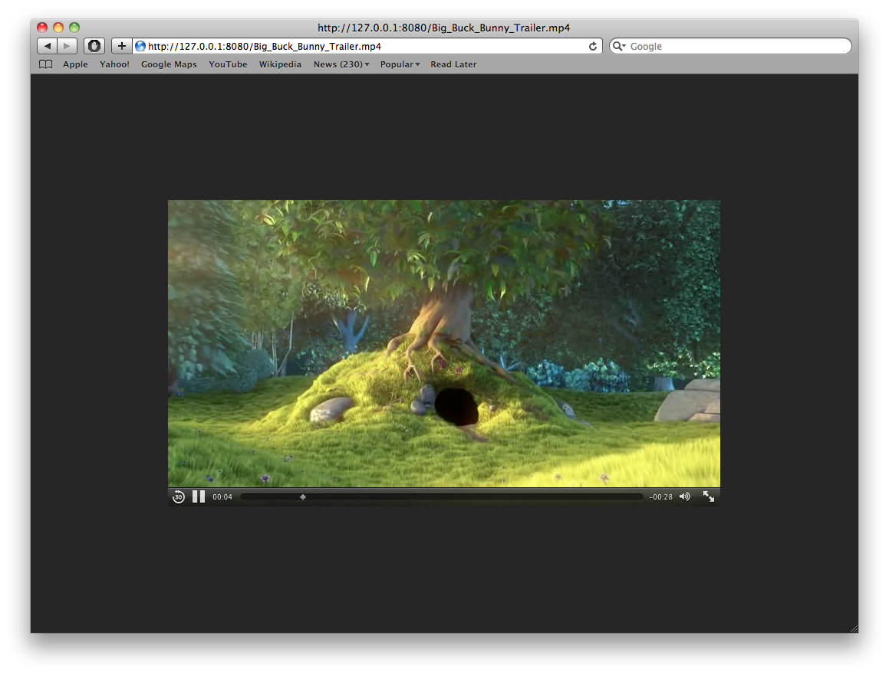
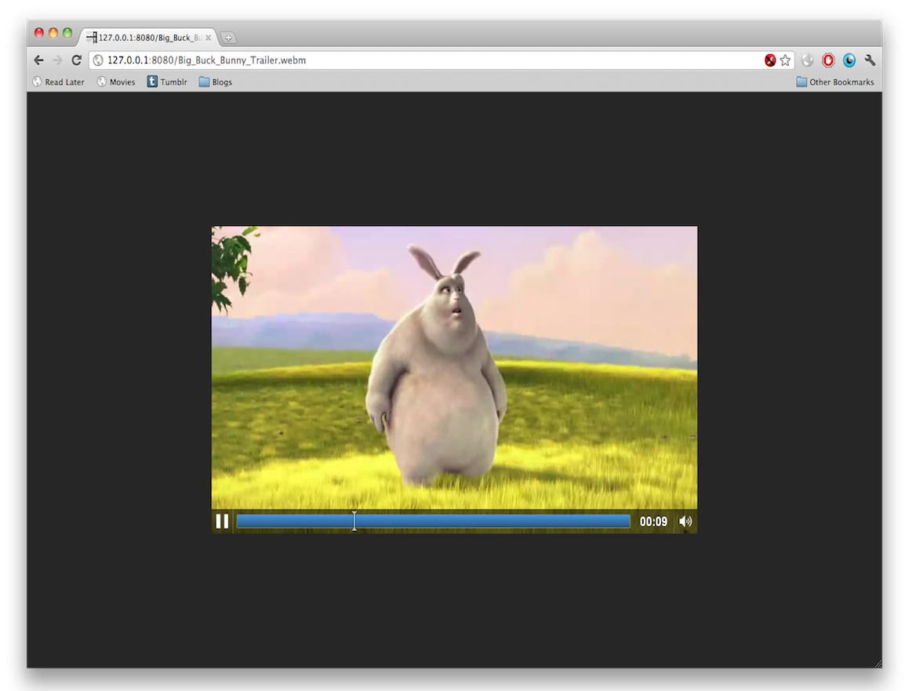

This is the third alpha release of MovieStreamer.
This release greatly improves performance and is a recommended update for all users running previous versions.
MovieStreamer is standalone app that streams the HTML5 compatible video files from your
~/Movies directory. Just navigate to http://127.0.0.1:8080 with your perfered browser
The following browsers have been known to work:
- Chrome/Chromium
- Firefox
- Opera
- Safari
- Mobile Safari
- Android
Disclaimer: This is ALPHA software, use at your own risk
That being said, you can dowload it here.
md5sum: 212d22db164a4a6a878b9d4eff5cf2f5
sha1: 05ed21f87624f2d01aad46d5224a7f78e727a462
System Requirements: A 64 bit capable computer running Mac OS X 10.6.8 or higher.
May work on Mac OS X 10.7, has not been tested.
Known Issues:
- BUG: program crashes when video files are 1.5 Gigabytes or greater
- UI: allow users to choose which directory to stream videos from
Feedback and bug reports can be emailed to me: mk AT devio DOT us
Screen Shots:


credit: Big Buck Bunny